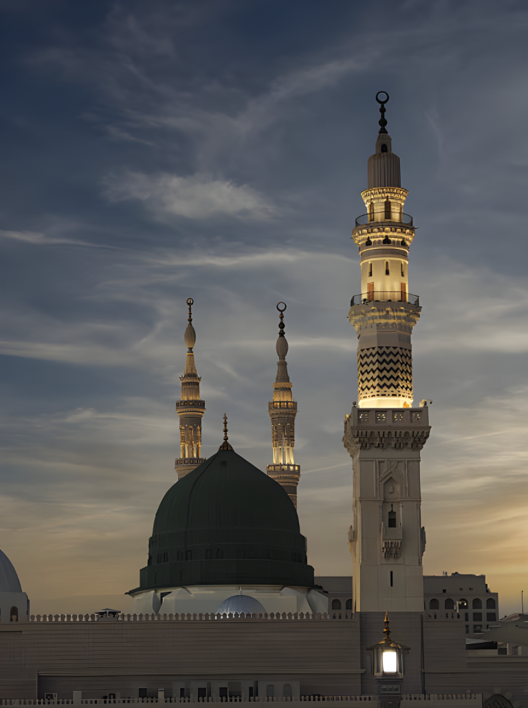

THIS ISSUE · THE BUILT WORLD
Light reveals a city. Shadow shows where its heat settles — and who can find relief.
Read the reported feature ↗
Medina · Al-Masjid an-Nabawi
The Green Dome and minarets
glow beneath the evening sky.
Light reveals a city. Shadow shows where its heat settles — and who can find relief.
Read the reported feature ↗Issue 08 · Three ways in
Three views into the mosque’s
photographic archive.
The visual index · Three views of Medina
A dusk view and two scans from B. Moritz’s
1916 Library of Congress portfolio.
No photographs in this collection just yet.
A note on the photographs
Scans are shown without HDR, filters, or tonal adjustments.
See each archive record for its date and provenance.